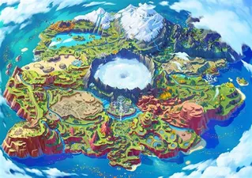

El mapa de paldea esta inspirado en España después de que el anterior juego de pokemon estuviera ambientado en Inglaterra y eso es bueno porque pokemon esta abriendo fronteras y pasandose a todo el mundo.

Como podemos observar en la imagen todos los sitios de España mas reconocidos o famosos se encuentran marcados muy detalladamente en este mapa.